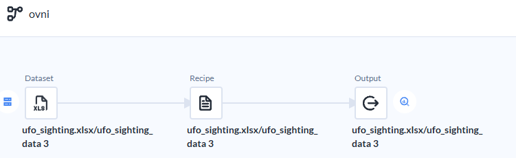
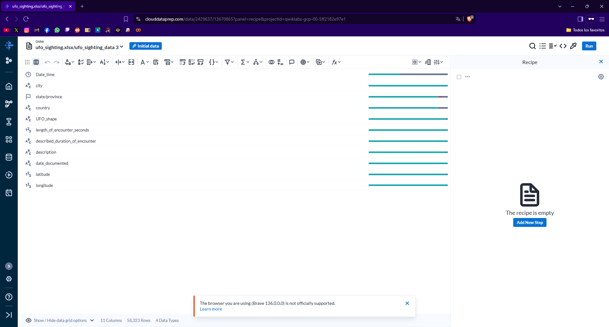
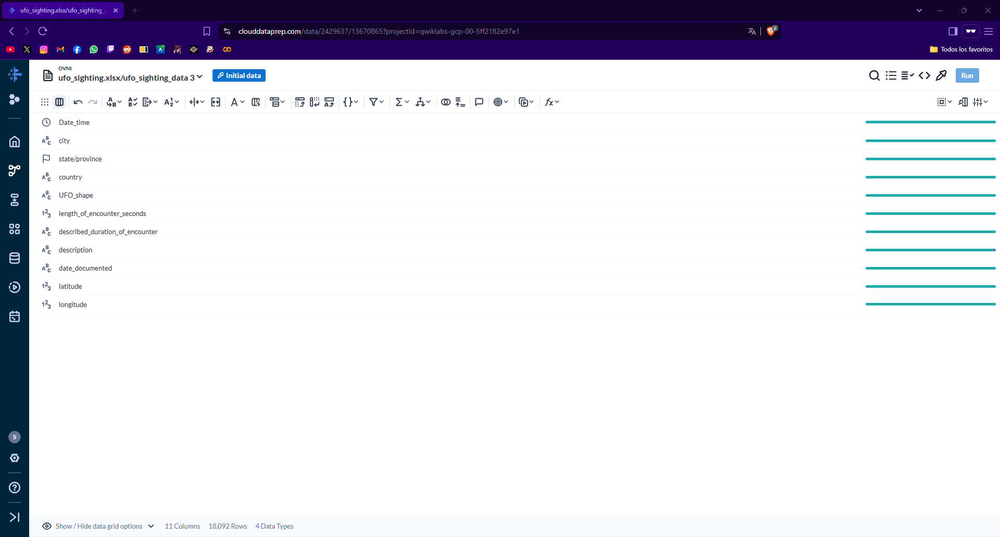
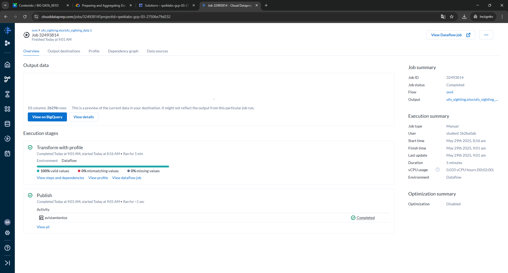
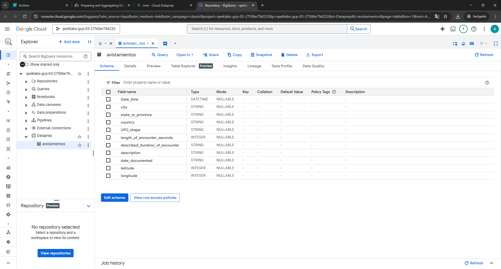
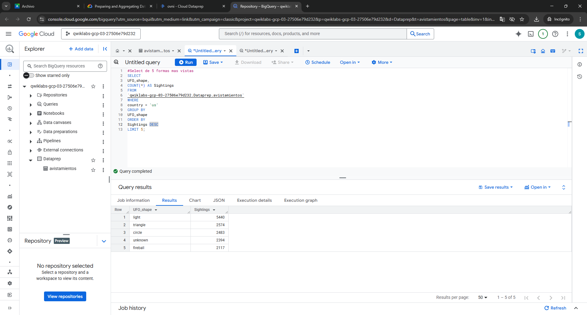
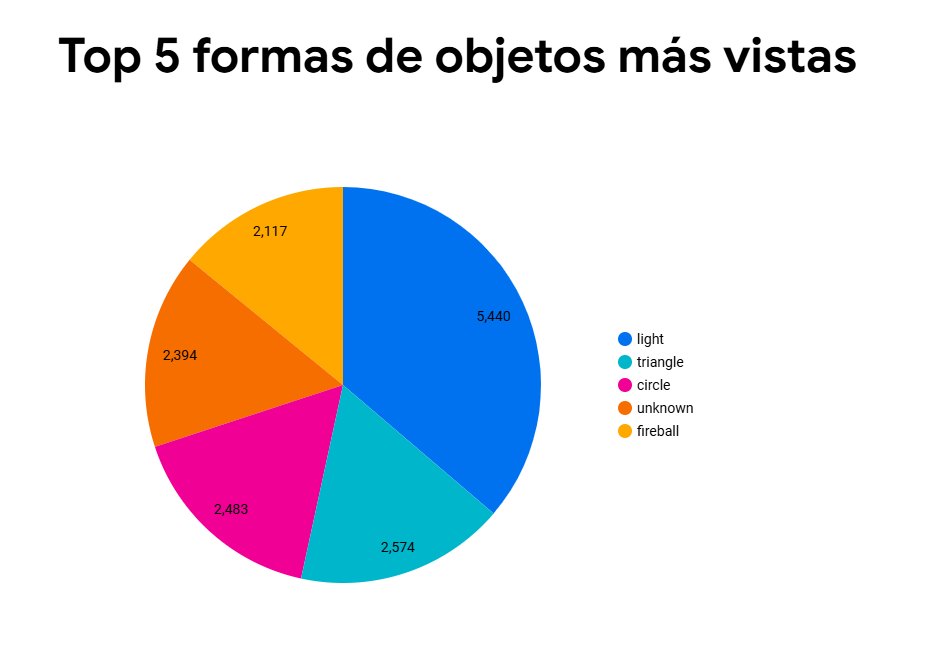
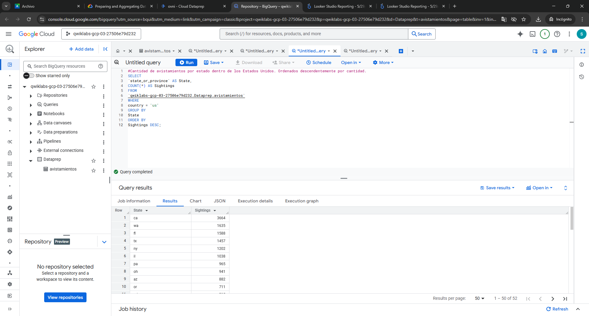
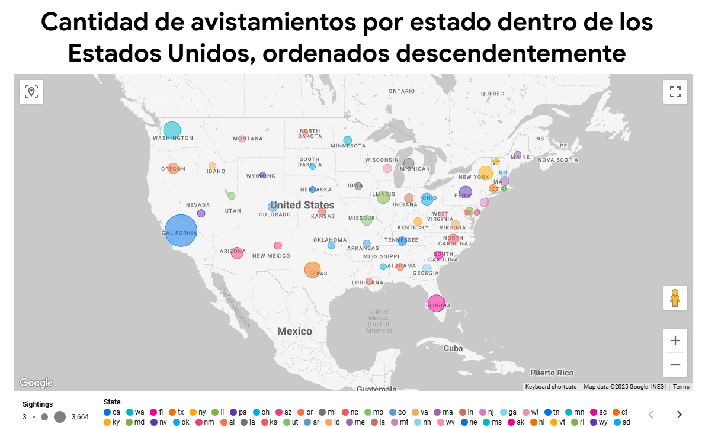

Paso 1: Creación del Bucket
Se crea el bucket con el nombre correspondiente al formato “nombre-alumno”, cumpliendo con las indicaciones del entorno de almacenamiento.

Se crea el bucket con el nombre correspondiente al formato “nombre-alumno”, cumpliendo con las indicaciones del entorno de almacenamiento.
Se sube al bucket el archivo Excel que contiene los registros en bruto de los avistamientos.

Se importa el archivo Excel a la herramienta Alteryx (Dataprep by Trifacta) para iniciar su preparación.

El Excel es vinculado a un flujo de trabajo (flow) para su análisis dentro de la plataforma.
Se revisa el contenido original del archivo para identificar los campos disponibles y su estado.
Se aplican transformaciones visibles en la receta (recipe), como limpieza de datos, renombre de columnas y filtrado de campos.

Se muestran los datos ya transformados y preparados para su análisis, listos para exportación.
Se ejecuta el job de exportación para generar una tabla con los datos tratados en BigQuery.
Validación de que la tabla fue correctamente creada en el entorno de BigQuery con los datos procesados.
Se formula una consulta SQL para extraer las 5 formas de objetos más reportadas en los registros de avistamientos.
Resultados obtenidos de la consulta, ordenados por frecuencia, lo que permite interpretar los datos más relevantes.
Gráfico generado a partir de los datos procesados, evidenciando visualmente las principales formas reportadas.

Se realiza una consulta en BigQuery para obtener el número de avistamientos por estado dentro de los Estados Unidos. Esta consulta permite identificar las regiones con mayor frecuencia de reportes, lo que puede ser útil para focalizar investigaciones futuras o establecer patrones geográficos.

Con base en la consulta anterior, se genera una visualización que muestra el Top 10 de estados con más avistamientos. Este gráfico permite identificar que estados como California, Washington y Florida presentan una alta concentración de fenómenos reportados, lo que podría estar relacionado con la densidad poblacional o la cobertura tecnológica en esas áreas.
en el grafico es puede vizualizar la cantidad de avistamientos por estados dentro de estados Unidos en forma descendentemente.
El flujo de trabajo completo permitió transformar datos en bruto en información valiosa mediante la carga, limpieza y análisis en Google Cloud Platform. Se recomienda profundizar en los análisis por año, tipo de avistamiento y contexto temporal para establecer correlaciones más robustas. Asimismo, mejorar la calidad del dataset y automatizar parte del pipeline aumentaría la eficiencia del proceso.